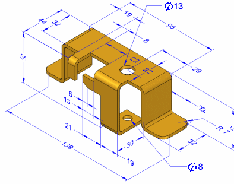
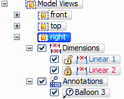
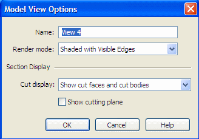

Creating 3D model views with PMI
Model views help you manage the display of a part, sheet metal, or assembly model within the Product Manufacturing Information (PMI) workflow. You can define different 3D views of the model to completely communicate design, manufacturing, and functional information.
Model views can contain:
-
Model state, for example, designed or flattened (synchronous).
-
Ordered dimensions, including driving dimensions that have been copied to 3D.
-
Synchronous dimensions
-
Annotations
-
Section views

Once defined, you can select individual model views from the Model Views collection, which is located under the PMI node on PathFinder.

For review purposes, you can share the model view and data electronically using the Solid Edge Viewer.
Creating model views
The Model View  command creates a 3D view of the assembly, part, or sheet metal model as currently
displayed in the graphics window.
command creates a 3D view of the assembly, part, or sheet metal model as currently
displayed in the graphics window.
-
All dimensions, annotations, view settings, and section views that are displayed when you create the model view are copied to the model view.
-
Each model view definition includes a view name, orientation, scale, and view extent (zoom).
-
The Model View Options dialog box is where you assign initial values for view name, render mode, and section view and cutting plane display. You can change these settings by editing the model view definition.
-
You access and control PMI model views using PathFinder.
-
Each model view definition contains a specific list of PMI elements—types of dimensions, annotations, and included section views—that are displayed when the view is applied.
Note:Showing or hiding these elements in one model view applies the show or hide setting to the same elements in all model views.

For more information, see Working with 3D PMI.
Reviewing model views
You can review all of the model views defined in the document along with their associated PMI data using a special PMI model review mode.
When you right-click a model view and choose Review, a Review command bar is displayed to guide you through the review of each model view.
-
You can navigate through the PMI model views using these tools:
-
Step through each view using the Next Model View
 and Previous Model View
and Previous Model View  .
. -
Jump to a specific model view by selecting its name from the model view list.
-
-
As you select each 3D model view, the active window temporarily changes to display the view as it was defined. This includes its show and hide states and section views that have been applied.
-
When you close the review session, the graphics screen returns to its previous display.
Another way to review the contents of a model view is to select the model view name on PathFinder, and then select the Activate View command .
Adding 3D section views to model views
-
The Section Views collection on PathFinder contains a list of all 3D section views that have been defined for the model.
-
You can add a 3D section view to a model view using the Add To Model View command on its shortcut menu.
-
Similarly, you can remove a section view from a model view using the Remove From Model View command.
Modifying a PMI model view
When you select the Edit Definition command on the model view's shortcut menu, the model view is displayed in a special edit environment. The Model View command bar provides access to two levels of editing functions for the PMI model view.
-
Using the Model View Options dialog box, you can change the view name, choose a different rendering mode, and change the section view and cutting plane display settings.

-
Selecting the Model View Display group button places you in model view creation and edit mode, where you can:
-
Control the visibility and display properties of individual PMI elements.
-
Add new PMI annotations and dimensions to the model view.
Note:-
In this edit mode, you cannot use the modeling commands.
-
Except for view orientation and render mode, changes made in this edit mode are WYSIWYG.
-
PMI elements and section views that are hidden are automatically removed from the model view.
-
PMI elements and section views that are added and shown are automatically added to the model view.
-
-
When you exit model view edit mode, your changes are applied to the model view and the normal modeling commands are made available again.
How do I
Show model views in a paletteManipulate a PMI model view
Edit a PMI model view definition
Reorient a PMI model view
Use a 3D section view in a PMI model view
Look up more details
Create a PMI model viewReview command (PMI model views)
Review PMI model views
Activate or deactivate a view
Model View Options dialog box
Add To Model View dialog box
Remove From Model View dialog box
Edit Definition command (PMI, sections, model views)
Set View Orientation command
Upload Model Views command
Quick links
PMI dimensions and annotationsPMI in drawing views